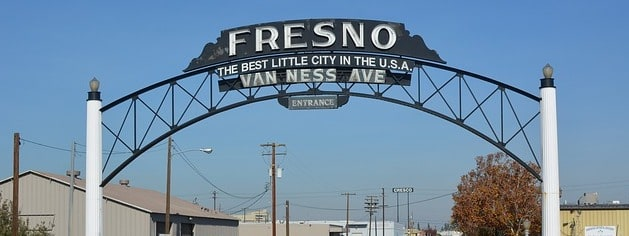
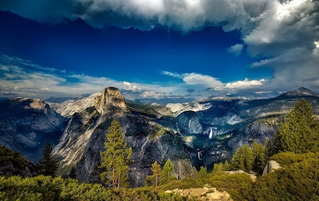

I was born in Fresno, California.
The good old valley, born and raised since 1992. We are known for our raisin production and
is part of the top 5 largest cities in California. Right behind us in our backyard is Yosemite National
Park that everyone comes to visit. We might not have much to offer but we do have the national park.
I don't think I can ever live anywhere else. I love California too much. All of my friends and fmaily
are here, but if I were to move I will probably end up in San Diego or San Jose. We shall see where
the wind blows, but for now I want to focus on my community here in the central valley.